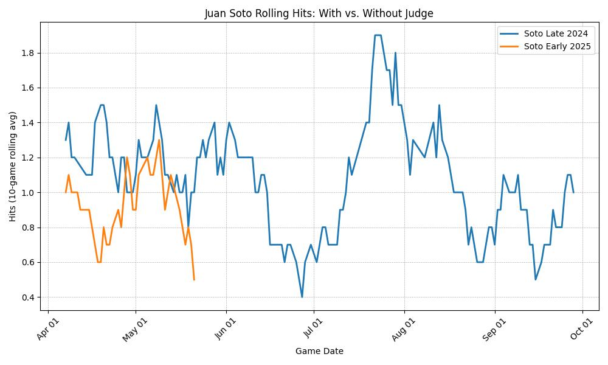

The chart below shows a clear difference in Juan Soto’s 10-game rolling average for hits per game.
Interpretation: In late 2024, when Soto batted in front of Aaron Judge in the Yankees lineup (blue line), his hits per game trended upward. In early 2025, after signing with the Mets and losing that lineup protection (orange line), his performance declined. The shift wasn’t talent—it was structure.
This graph visualizes the strategic value of protection in a batting order. Same player, different ecosystem.